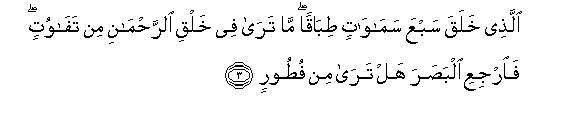

بسم الله الرحمن الرحيم
Sayyid Abul Ala Maududi - Tafhim al-Qur'an - The Meaning of the Qur'an
 67.
Surah Al Mulk (The Kingdom)
67.
Surah Al Mulk (The Kingdom)
The Surah takes its name al-Mulk from the very first sentence.
It could not be known from any authentic tradition when this Surah was revealed, but the subject matter and the style indicate that it is one of the earliest Surahs to be revealed at Makkah.
In this surah, on the one hand, the teachings of Islam have been introduced briefly, and, on the other, the people living in heedlessness have been aroused from their slumber in a most effective way. A characteristic of the earliest surahs of the Makkan period is that they present the entire teachings of Islam and the object of the Holy Prophet's mission, not in detail, but briefly, so that they are assimilated by the people easily. Moreover, they are particularly directed to make the people shun heedlessness, to make them think, and to arouse their dormant conscience.
In the first five verses man has been made to realize that the universe in which he lives is a most well organized and fortified Kingdom in which he cannot detect any fault, any weakness or flaw, how ever hard he may try to probe. This Kingdom has been brought from nothing into existence by Allah Almighty Himself and All the powers of controlling, administering and ruling it are also entirely in Allah's hand and His power is infinite. Besides, man has also been told that in this wise system he has not been created without a purpose, but he has been sent here for a test and in this test he can succeed only by his righteous deeds and conduct.
In vv. 6-11, dreadful consequences of disbelief which will appear in the Hereafter have been mentioned, and the people told that Allah, by sending His Prophets, has warned them of these consequences in this very world, as if to say "Now, if you do not believe in what the Prophets say and correct your attitude and behavior accordingly, in the Hereafter you will yourself have to admit that you really deserved the punishment that was being meted out to you."
In vv. 12-l4, the truth that has been impressed on the minds is that the Creator cannot be unaware of His creation, as if to say: "He is aware of each open and hidden secret of yours, even of the innermost ideas of your hearts. Hence, the right basis of morality is that man should avoid evil, fearing the accountability of the unseen God, whether in the world there is a power to take him to task for this or not, and whether in the world there is a possibility of being harmed by such a power or not. Those who adopt such a conduct in the world alone will deserve forgiveness and a rich reward in the Hereafter."
In vv. 15-23, making allusions, one after the other to those common truths of daily occurrence, which man does not regard as worthy of much attention, he has been invited to consider them seriously. It has been said: "Look: the earth on which you move about with full satisfaction and peace of mind, and from which you obtain your sustenance has been subdued for you by Allah; otherwise this earth might at any time start shaking suddenly so as to cause your destruction, or a typhoon might occur, which may annihilate you completely. Look at the birds that fly above you; it is only Allah Who is sustaining them in the air. Look at your own means and resources: if Allah wills to inflict you with a scourge, none can save you from it; and if Allah wills to close the doors of sustenance on you, none can open them for you. These things are there to make you aware of the truth, but you see them like animals, which are unable to draw conclusions from observations, and you do not use your sight, hearing and minds which Allah has bestowed on you as men; that is why you do not see the right way."
In vv. 24-27, it has been said: "You have ultimately to appear before your God in any case. It is not for the Prophet to tell you the exact time and date of the event. His only duty is to warn you beforehand of its inevitable occurrence. Today you do not listen to him and demand that he should cause the event to occur and appear prematurely before you; but when it does occur, and you see it with your own eyes, you will then be astounded. Then, it will be said to you "This is the very thing you were calling to be hastened."
In vv. 28-29 replies have been given to what the disbelievers of Makkah said against the Holy Prophet (upon whom be peace) and his Companions. They cursed the Holy Prophet and prayed for his and the believers destruction. To this it has been said: "Whether those who call you to the right way are destroyed, or shown mercy by Allah, how will their fate change your destiny? You should look after yourselves and consider who would save you if you were overtaken by the scourge of God?You regard those who believe in God and put their trust in Him as the misguided. A time will come when it will become evident as to who was misguided in actual truth.
In conclusion, the people have been asked this question and left to ponder over it "If the water which has come out from the earth at some place in the desert or hill country of Arabia and upon which depends your whole life activity, should sink and vanish underground, who beside Allah can restore to you this life giving water?"

In the name of Allah, the Compassionate, the Merciful.

[1-4] Full of blessings is He1 in Whose hand is the Kingdom of the Universe,2 and He has power over everything.3 Who created death and life that He may try you to see which of you is best in deeds,4 and He is All-Mighty as well as All-Forgiving.5 Who created seven heavens, one above the other.6 You will not see any fault in the creation of the Merciful.7 Turn up your eyes: do you see any flaw8 anywhere? Look up again and yet again: your look will return to you, disappointed, wearied.
[5] And indeed We have adorned the nearest heaven9 with magnificent lamps10 and made them a means of driving away Satans.11 For these satans We have prepared a blazing Fire.

[6-11] For those who disbelieve in their Lord,12 there is the torment of Hell, and it is an evil abode. When they are flung into it, they will hear its roaring,13 and it will be boiling up, as though bursting with rage. Every time a crowd is cast into it, its keepers will ask them, "Did not a warner come to you?"14 They will answer, "Yes, a warner did come to us, but we belied him and said, `Allah has not sent down anything: you are in grave error'!"15 And they will add, "Had we only listened or understood,16 we would not now be among the dwellers of the blazing Fire." Thus will they confess their own sin.17 Damned be the dwellers of Hell!
[12-14] Those who fear their Lord unseen,18 for them is forgiveness and a rich reward.19 Whether you speak secretly or aloud it is alike for Allah): He even knows the secrets of the hearts.20 Would He not know, who has created?21 He is the knower of subtleties22 and is All-Aware.
[15-23] He it is Who has subdued the earth to you. So walk about on its chest and eat of God's provisions.23 To Him you shall return on Resurrection.24 Do you feel secure that He Who is in the heaven25 would not cause you to sink underground, and the earth may start rocking suddenly? Do you feel secure that He Who is in the heaven would not send a whirlwind charged with stones on you?26 Then you shall know how terrible was My warning!27 And those who have gone before them also belied. Then see how severe was My chastisement!28 Do they not see the birds above them, spreading their wings and closing them? None is upholding them but the Mercifu1.29 He it is Who watches over everything.30 Tell, what army is there with you that can help you against the Merciful.31 The fact is that the disbelievers are lost in utter delusion. Or tell, who is there to provide for you if the Merciful should withhold His provision? In fact, these people persist in rebellion and aversion from the Truth. Just consider. Is he who is walking prone on his face32 better guided or he who is walking upright on a smooth road? Say to them, "Allah it is Who created you, and gave you the faculties of hearing and sight and gave you the hearts to think and understand, but you are seldom grateful."33
[24-27] Say to them: Allah it is Who has dispersed you in the earth, and to Him you shall be gathered together.34 They say, "When will this promise be fulfilled if what you say be true?"35 Say, "The knowledge of it is with Allah, I am only a plain warner."36 Then, when they see it close at hand, the faces of all those who disbelieve, shall be distorted,37 and at that time it will be said to them, "This is the same that you were calling for."
[28-30] Say to them, "Have you ever considered that even if Allah should destroy me and those with me, or should bestow mercy upon us, who will save the disbelievers from the painful torment?"38 Say to them, "He is the All-Merciful. In Him we have believed and in Him have we put our trust.39 Soon you will know who is involved in grave error." Say to them, "Have you ever considered that if the water of your wells should sink down into the earth, who would then restore to you the running springs of water?"40
1Tabaraka is a superlative from barkat. Barkat comprehends the meanings of exaltation and greatness, abundance and plentifulness, permanence and multiplicity of virtues and excellences. When the superlative tabaraka is formed from it, it gives the meaning that Allah is infinitely noble and great; He is superior to everything beside Himself in His essence and attributes and works; His beneficence is infinite, and His excellences are permanent and everlasting. (For further explanation, see E.N. 43 of AI-A`raf, E.N. 1.4 of Al-Mu'minun E.N.'s 1 and 19 of Al-Furqan).
2As the word al-Mulk has been used definitely, it cannot be taken in any limited meaning. Inevitably it would imply sovereignty over everything that exists in the Universe. "In Whose hand is the Kingdom' does not mean that He has physical hands, but that He is possessor of all power and authority and no one else has any share in it.
3That is, He can do whatever He wills: nothing can frustrate or hinder Him from doing what He pleases.
4That is, the object of giving life to men in the world and causing their death is to test them to see which of them is best in deeds. Allusion has been made in this brief sentence to a number of truths:
(1) That life and death are given by Allah; no one else can grant life nor cause death;
(2) that neither the life nor the death of a creation like man, which has been given the power to do both good and evil, is purposeless; the Creator has created him in the world for the test: life is for. him the period of the test and death means that the time allotted for the test has come to an end;
(3) that for the sake of this very test the Creator has given every man an opportunity for action, so that he may do good or evil in the world and practically show what kind of a man he is;
(4) that the Creator alone will decide who has done good or evil; it is not for us to propose a criterion for the good and the evil deeds but for Almighty Allah; therefore, whoever desires to get through the test, will have to find out what is the criterion of a good deed in His sight; the fifth point is contained in the meaning of the test itself, that is, every person will be recompensed according to his deeds, for if there was no reward or punishment the test would be meaningless.
5This has two meanings and both are implied here:
(1),'That He is Almighty: in spite of being dominant over all His creatures, He is Merciful and Forgiving for them, not tyrannous and cruel; and
(2) that He has full power to punish the evildoers: no one can escape His punishment; but He is forgiving for him who feels penitent, refrains from evil and asks for His forgiveness.
6For explanation, see E.N. 34 of AI-Baqarah, E.N 2 of Ar-Ra`d, E.N. 8 of Al-Hijr, E.N. 113 of Al-Hajj, E.N. 15 of Al-Mu'minun, E.N. 5 of As-Saaffat, E.N. 90 of Al-Mu'min.
7Literally, tafawut is disproportion: two things being out of accord and agreement with each other. So, the Divine words mean: "You will not see any indiscipline, any disorder and discordance anywhere in the universe, there is nothing disjointed and out of proportion in this world created by Allah: all its parts are well connected and in perfect harmony and coordination.
8The word futur means a crack, rift, fissure, or a thing's being split and broken. The verse means to say that the whole universe is so closely well-knit and everything in it, from a particle on the earth to the huge galaxies, so well connected and coherent that the continuity of the system of the universe seems to break nowhere, however hard one may try to probe and investigate. (For further explanation, see E.N. 8 of Surah Qaf).
9"The nearest heaven": the heaven the stars and planets of which can be seen with the naked eye; the objects beyond that which can be seen only through telescopes are the distant heaven; and the heavens still farther away are those which have not yet been seen even with telescopes.
10The word masabih in the original has been used as a common noun, and therefore, automatically gives the meaning of the lamp's being splendid and glorious. It means: "We have not created this universe dark, dismal and desolate, but have decked and decorated it with stars, the glory and grandeur of which at night strike man with amazement."
11This does not mean that the stars themselves are pelted at the Satans, nor that the meteorites shoot out only to drive away the Satans, but it means that the countless meteorites which originate from the stars and wander in space at tremendous speeds and which also fall to the earth in a continuous shower prevent the Satans of the earth from ascending to the heavens. Even if they try to ascend heavenward these meteorites drive them away. This thing has been mentioned here because the Arabs believed about the soothsayers, and this also was the claim made by the soothsayers themselves, that the Satans were under their control, or that they had a close contact with them, and through them they received news of the unseen, and thus, could foretell the destinies of the people. That is why at several places in the Qur'an, it has been stated that there is absolutely no possibility of the Satans' ascending to the heavens and bringing news of the unseen. (For explanation, see E.N.'s 9-12 of AI-Hijr, E.N.'s 6, 7 of As-Saaffat).
As for the truth about meteorites, man's information in this regard is still without a scientific basis. However, the theory which seems best to account for all the facts known today and the information gathered from the examination of the meteorites fallen on the earth, is that meteorites originate from the disintegration of one or more planets and wander in space and sometimes fall to the earth under its gravitational pull. (See Encyclopedia Britannica, vol. XV, under "Meteorites").
12That is, the fate of all those,whether men or Satans, who disbelieve in their Lord. (For the explanation of the meaning of disbelieving in the Lord (Rabb), see E.N 161 of AI-Baqarah, E.N. 178 of An-Nisa', E.N. 39 of Al-Kahf, E,N. 3 of Al-Mu'min
13The word shahiq is used for producing a cry like the ass's braying. The sentence may also mean that it could be the sound of Hell itself, as well as that it would be the sound coming from Hell, where the people already flung into it would be screaming and crying. This second meaning is supported by Surah Hud: 106, where it has been said: "Therein they will pant and hiss (because of thirst)", and the first meaning is confirmed by Al-Furqan: 12, which says: "When the Hell will see them from afar, they will hear the sounds of its raging and roaring." On this basis, the correct meaning is that it would be the noise made both by Hell and by the dwellers of Hell.
14The real nature of this question will not be of a question that the keepers of Hell would like to ask them whether a warner from Allah had come to them or not, but the object would be to make them realize that no injustice had been done to them by casting them into Hell. They would try to make them confess that Allah had not kept them uninformed and unwarned: He had sent the Prophets to them; He had informed them of the truth and of the Right Way; He had warned them that if they followed a way other than the Right Way, it would lead them to Hell, in which they had been cast. But they had not listened to the Prophets. Hence, they rightly deserved the punishment which was being meted out to them at that time.
This thing has been pointed out over and over again in the Qur'an that the test for which Allah has sent man in the world is not being conducted by keeping man absolutely unaware and uninformed of the requirements of the test only to see whether he found the right way by himself or not; but Allah has made the most appropriate arrangements that could possibly be trade of guiding him to the Right Way, and it is that He has raised the Prophets and sent down the Books. Now the test of man lies in this whether he accepts the Prophets and the Books brought by them and adopts the straight way, or turns away from them to follow his own desires, whites and speculations. Thus, the Prophethood, in fact, is Allah's argument which He has established against man and on its acceptance or rejection depends his whole future life. No one, after the appointment of the Prophets, can present the excuse that he remained unaware of the Truth, or that he has been caught and put to the hard test unawares, or that he is being punished while he was innocent. This theme has been presented in countless different ways in the Qur'an; for instance, see Al-Baqarah: 213, and E.N. 230 on it; An-Nisa': 41-42, 165 and E N.'s 64 and 208; Al-An`am: 130-131, and E.N.'s 98-100; Bani Isra'il: 15 and E.N. 17; Ta Ha: 134; Al-Qasas 47, 59, 65 and E.N.'s 66, 83; Fatir: 37; AlMu'min: 50 and E.N. 66.
15That is, "Not only you but the people who have believed in and followed you also are misguided and lost in grave error."
16"Had we only listened or understood": "Had we listened to the Prophets with attention as seekers after Truth or used our intellect to understand what actually was the message they were presenting before us." Here listening has been given priority over understanding, the reason being that the pre-requisite of obtaining guidance is to listen to what the Prophet teaches (or to read if it is in the written form, like a seeker after Truth). To ponder over it in an attempt to understand the truth is secondary. Without the Prophet's guidance man cannot by himself reach the Truth directly by using his intellect and common sense.
17The word dhanb (sin) has been used in the singular. It means that the real sin because of which they became worthy of Hell was to belie the Messengers and refuse to obey them; all other sins are its consequences.
18This is the real basis of morality in religion. A person's refraining from an evil because it is an evil in his personal opinion, or because the world regards it as an evil, or because its commission is likely to bring loss in the world, or because it may entail a punishment by a worldly power, is a very flimsy basis for morality. A man's personal opinion may be wrong, he may regard a good thing as bad and a bad thing as good because of some philosophy of his own. In the first place, the worldly standards of good and evil have never been the same: they have been changing from time to time. No universal and eternal standard in the moral philosophies is found today, nor has it ever been found before. The fear of worldly loss also does not provide a firm foundation for morality. The person who avoids an evil because he fears the loss that may result from it for himself, cannot keep himself from committing it when there is no fear of incurring such a loss. Likewise, the danger of the punishment by a worldly power also is not something which can turn a person into a gentleman. Everybody knows that no worldly power is knower of both the seen and the unseen. Many crimes can be committed unseen and unobserved. Then, there are many possible devices by which one can escape the punishment of every worldly power; and the Laws made by a worldly power also do not cover all evils. Most evils are such as do not come within the purview of the mundane laws, whereas they are even worse than the evils which they regard as punishable. That is why, the Religion of Truth has raised the edifice of morality on the basis that one should refrain from an evil in fear of the unseen God Who sees man under all conditions, from Whose grasp man cannot escape in any way, Who has given man an all-pervading, universal and everlasting criterion of good and evil. To forsake evil and adopt good only out of fear of Him is the real good which is commendable in religion. Apart from this, if a man refrains from committing evil for .any other reason or adopts acts which in view of their external form are regarded as good acts, his these moral acts will not be worth any merit and value in the Hereafter, for they are like a building which has been built on sand.
19That is, there are two inevitable results of fearing God unseen:
(1) That whatever errors and sins one will have committed because of human weaknesses, will be forgiven provided these were not committed because of fearlessness of God; and
(2) that whatever good acts a man performs on the basis of this belief, he will be rewarded richly for them.
20The address is to all human beings, whether they are believers or unbelievers. For the believer it contains the admonition that while living his life in the world he should always remember that not only his open and hidden deeds but even his secret intentions and innermost thoughts are not hidden from Allah; and for the unbeliever the warning that he may do whatever he may please fearless of God, but nothing that he does can remain un-noticed and unseen by Him.
21Another translation can be: "Would He not know His own creatures?" In the original man khalaqa has been used, which may mean: "Who has created" as well as "whom He has created, " In both cases the meaning remains the same. This is the argument for what has been said in the preceding sentence. That is, how is it possible that the Creator should be unaware of His creation? The creation may remain unaware of itself, but the Creator cannot be unaware of it. He has made every vein of your body, every fiber of your heart and brain. You breathe because He enables you to breathe, your limbs function because He enables them to function, How then can anything of yours remain hidden from Him?
22The word Latif as used in the original means the One Who works in imperceptible ways as well as the One Who knows the hidden truths and realities.
23That is, "This earth has not become subdued for you of its own accord, and the provisions also that you are eating have not become available here by themselves, but Allah has so arranged it by His wisdom and power that your life became possible here and this splendid globe became so peaceful that you are moving about on it with full peace of mind, and it has become such a vast table spread with food that it contains endless and limitless provisions for your sustenance. If you are not lost in heedlessness and look about yourself intelligently you will find how much wisdom underlies the making of this earth habitable for you and arranging in it immeasurable stores of provisions for you." (For explanation, see E.N.'s 73, 74, 81 of Surah An-Naml, E.N.'s 29, 32 of Ya Sin, E.N.'s 90, 91 of Al-Mu'min, E.N. 7 of Az-Zukhruf, E,N. 7 of Al-Jathiyah, E,N. 18 of Surah Qaf.)
24That is, "While you move about on the earth and eat of what Allah has. provided for you here, you should not forget that ultimately you have to appear before God one day."
25This does trot mean that Allah lives in the heavens, but it has been so said because man naturally looks up to the heaven whenever he wants to turn to Allah, raises his hands heavenward in prayer and implores Allah turning his eyes up to heaven whenever he finds himself helpless in an affliction. Then whenever a calamity befalls him suddenly, he says it has descended from heaven; whenever something unusual happens, he says it has come from heaven; and he calls the Books revealed by Allah as heavenly Books. Accordingly to a tradition-in Abu Da'ud, a person came before the Holy Prophet with a black slave-girl and said: "It has become obligatory on me to set a slave free; can I set this slave-girl free? Holy Prophet asked the slave-girl, "Where is Allah?" She pointed heavenward with her forger. The Holy Prophet asked, "Who am I?" She first pointed towards him and then towards the heaven, by which she obviously meant to say: "You have come from Allah." Thereupon the Holy Prophet said: "Set her free; she is a believer." (A story closely resembling this has been narrated in Mu'watta, Muslim and Nasa'i also). About Hadrat Khawla bint Tha`Ibah.. Hadrat 'Umar once said to the people: "She is the lady whose complaint was heard above the seven heavens" (In E.N. 2 of Surah al-Mujadalah, we have given full details concerning this). All this clearly shows that it is natural with man that whenever he thinks of God, his mind turns to the heaven above and not to the earth below. In view of this very thing the words man fis-samaa. (He Who is in the heaven) have been used about Allah. There is no room here for any doubt that the Qur'an regards Allah Almighty as living in the heaven. In fact, there cannot be any basis for this doubt, for in the very beginning of this Surah Al-hulk, it has been stated: "He Who created seven heavens, one above the other", and in Al-Baqarah it has been said "You will face Allah in whatever direction you turn your face." (v : 115)
26The object is to impress this: " Your very survival and well-being on the earth are at all tunes dependent upon Allah Almighty's grace and bounty: you are not strutting about on this earth at will by your own power: you are under obligation only to Allah's protection for each moment of your life that you are passing here, otherwise Allah at any moment may cause such an earthquake to occur as may make this very earth to become your grave instead of the cradle that it is, or may cause a windstorm to blow razing all your towns and settlements to the ground. "
27"My warning": the warning that was being given through the Holy Prophet (upon whom be peace) and the Qur'an to the disbelievers of Makkah to the effect: "If you do not refrain from your disbelief and polytheism and do not accept the message of Tauhid being given to you, you will be overtaken by the scourge of God."
28The allusion is to the communities who had belied the Messengers, who had come to them previously and consequently been afflicted with Divine punishment.
29That is, each bird that flies in the air, does so in the protection of the All-Merciful God. He it is Who has given to each bird the form and structure by which it became able to fly; He it is Who has taught each bird the method to fly; He it is Who has made the air obey the laws by which it became possible for the heavier than air bodies to fly in it; and He it is Who upholds every bird in the air; otherwise the moment Allah withdraws His protection from it, it drops to the ground.
30That is, this is not confined only to birds, but whatever exists in the world, exists because of Allah's keeping and guardianship. He alone provides the . means necessary for the existence of everything, and He alone keeps watch that everything created by Him is provided with the necessities of life.
31Another translation can be: "Who is there beside the Merciful, who comes to your rescue as your army?" The translation that we have adopted in the text above has relevance to the following sentence, and this second to the preceding discourse.
32"Walking prone on his face": walking with face turned down like the cattle on the same track on which someone put him.
33That is, "Allah had made you men, not cattle. You were not meant to follow blindly whatever error and deviation you found prevailing in the world, without considering for a moment whether the way you had adopted was right or wrong. You had not been given these ears that you may refuse to listen to the one who tries to distinguish the right from the wrong for you, and may persist in whatever false notions you already had in your mind; you had not been given these eyes that you may follow others like the blind and may not bother to see whether the signs scattered around you in the world testified to the Unity of God, which the Messenger of God is preaching, or whether the system of the universe is Godless, or is being run by many, gods simultaneously. Likewise, you had also not been given this knowledge and intelligence that you may give up thinking and understanding to others and may adopt every crooked way that was enforced by somebody in the world, and may not use your own intellect to see whether it was right or wrong. Allah had blessed you with knowledge and intelligence, sight and hearing, so that you may recognize the truth, but you are being ungrateful to Him in that you are employing these faculties for every other object than the one for which these had been granted." (For further explanation, see E.N.'s 72, 73 of An Naml E.N.'s 75, 76 of Al-Mu'minun, E.N.'s 17, 18 of As-Sajdah, E.N. 31 of AI-Ahqaf). "
34That is, "After being resurrected from death, you will be gathered together from every corner of the earth and presented before Allah."
35They did not ask this question in order to know the time and date of Resurrection so that if they were told the Year, the month, the day and time of its occurrence, they would accept it. But, in fact, they thought that Resurrection was impossible, and its occurrence remote from reason, and they asked this question in order to have an excuse for denying it. They meant to say, "When will this strange story of Resurrection and gathering together, that you are telling us, materialize? What for has it been put off? Why don't you make it appear forthwith so that we are assured of it?" In this connection, one should understand that one can be certain of Resurrection only by rational arguments, and these have been elaborated at many places in the Qur'an. As for the date of its occurrence only an ignorant person could raise such a question about it, for even if it is told, it does not make any difference. The unbeliever would say: "Well, when it does occur on the date you tell, I shall then believe in it; how can I believe today that it will actually occur on that very day?" (For further explanation, see E.N. 63 of Surah Luqman, E.N. 116 of Al-Ahzab, E.N.'s 5, 48 of Saba' E.N. 45 of Ya Sin).
36That is, "This I know that it will certainly come, and knowing this much only is enough for warning the people before its actual occurrence. As for the question when it will actually come, the knowledge of it is with Allah, not with me, and there is no need of this knowledge for administering the warning. This can be better understood by an example. As to the exact time when a person will die, it is only known to Allah; however, all know that everyone has to die one day. Our this knowledge is enough that we may warn a heedless friend of ours that he should look after himself and his interests before death. For this warning it is not necessary to know the exact day on which he will die.
37That is, they will be in the same agony as is suffered by the criminal who is being taken to the gallows.
38When the Holy Prophet (upon whom be peace) started his mission in Makkah and the members of the different clans of Quraish began to embrace Islam, the people of every house started cursing him and his Companions. They started practicing magic and charms on him to cause his death, even devising plots to kill him. At this, it was said: "Say to them: what will it profit you whether we perish or we live by the grace of God? You should worry for yourselves as to how you will save yourselves from the punishment of Allah?"
39That is, "We have believed in God, and you are denying Him; we have put our trust in Him, and you have put your trust in yourself, your own resources and false deities besides Allah; therefore, only we deserve to be shown mercy by Allah, not you".
40That is "Has another besides Allah the power to restore these springs of water to you? If none else has this power, and you know fully well that none has it, then who is worthy of worship: God or your false deities, who do not have the power to restore them? Then ask your own selves as to who is misled and misguided: those who believe in One God, or those who believe in many gods."